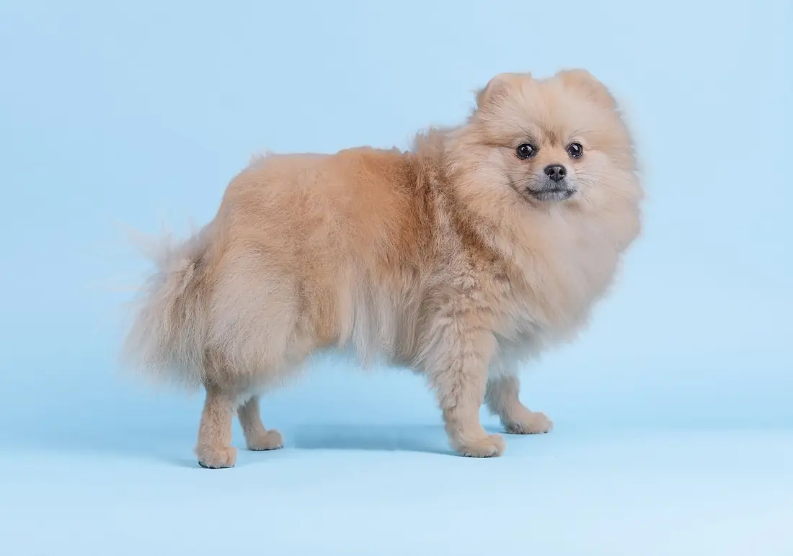
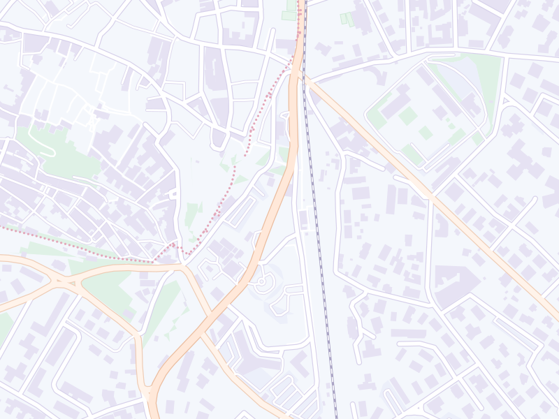

Toelettatura a Viterbo Entra arruffato, esce una nuvola.
Bagno e asciugatura, taglio e tosatura, spazzolatura. In viale Armando Diaz 36.
Servizi
Pulito, in ordine e morbido da accarezzare.
Dal bagno alla spazzola, i servizi di toelettatura per il tuo cane. Hai un’esigenza particolare? Scrivila quando prenoti.
-
Bagno e asciugatura
Lavaggio e asciugatura completa del pelo, per un cane pulito e morbido.
-
Taglio e tosatura
Il pelo accorciato e messo in ordine, in base al tipo di mantello e a come piace a te.
-
Spazzolatura
Pettine e spazzola per sciogliere i nodi e togliere il pelo morto. Pelo infeltrito? Segnalalo quando prenoti.
Recensioni
Affidare il tuo cane è una questione di fiducia.
Per questo conta quello che scrivono gli altri clienti: su Google la media è 5,0 su 5, con 60 recensioni.
Ho portato […] per la prima volta e sono rimasta davvero molto soddisfatta.
Le parole che tornano nelle recensioni
- passione3 recensioni
- fiducia2 recensioni
- dolce2 recensioni
- prezzi3 recensioni
- cucciolo2 recensioni
- barboncino2 recensioni
- lagotto2 recensioni
- pet2 recensioni
Estratto e temi dalle recensioni pubbliche su Google Maps, ottobre 2026. Il numero indica quante recensioni ne parlano.
Prenota
Prenota la toelettatura con un messaggio.
Scegli animale, taglia e servizio: il testo per WhatsApp si scrive da solo, devi solo inviarlo.
Componi il messaggio
Animale, taglia, servizio e giorno: bastano pochi tocchi.
Invialo su WhatsApp
Si apre la chat con il testo già scritto: parte solo quando premi invio.
Fissi giorno e orario
In chat o al telefono, come preferisci.
Il tuo messaggio
Tocca le opzioni: l’anteprima si aggiorna da sola.
Anteprima del messaggio
Ciao! Vorrei prenotare una toelettatura per il mio cane. Servizio: bagno e asciugatura. Grazie!
Si apre WhatsApp con il testo già scritto: parte solo quando premi invio. Preferisci parlare? Chiama il 328 063 6405.
Orari e indirizzo
In viale Armando Diaz 36, vicino alla stazione di Porta Romana.
Orari di apertura
Dal lunedì al sabato, orario continuato.
| Lunedì | 9:00–19:00 |
|---|---|
| Martedì | 9:00–19:00 |
| Mercoledì | 9:00–19:00 |
| Giovedì | 9:00–19:00 |
| Venerdì | 9:00–19:00 |
| Sabato | 9:00–19:00 |
| Domenica | Chiuso |
Nei giorni festivi gli orari possono variare: meglio chiamare prima.

© OpenStreetMapViale Armando Diaz, 36
01100 Viterbo (VT) · Zona Pietrare
Bagno, taglio o spazzolatura?